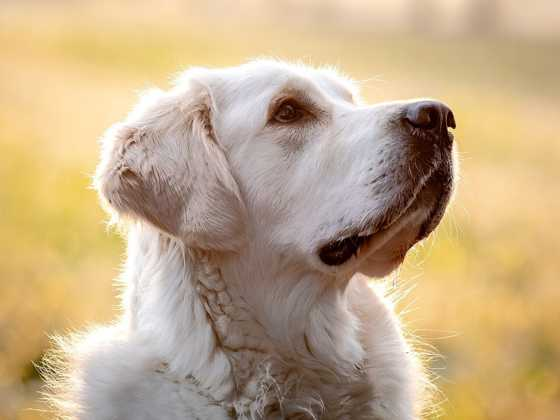
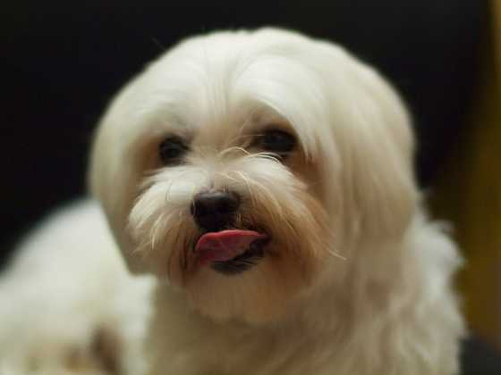
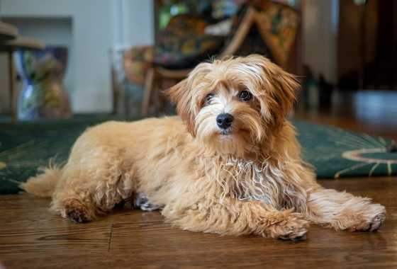
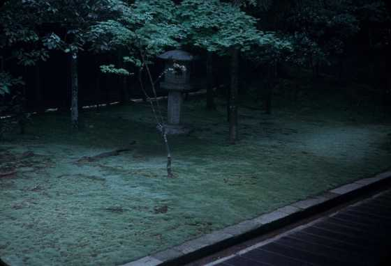
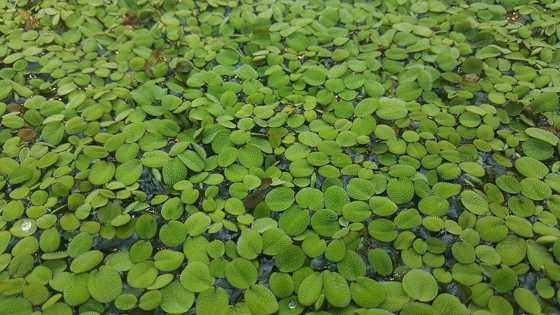
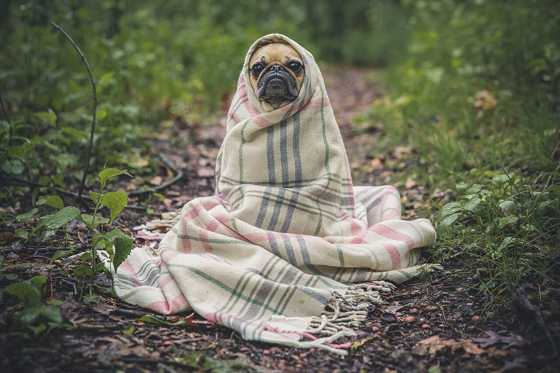
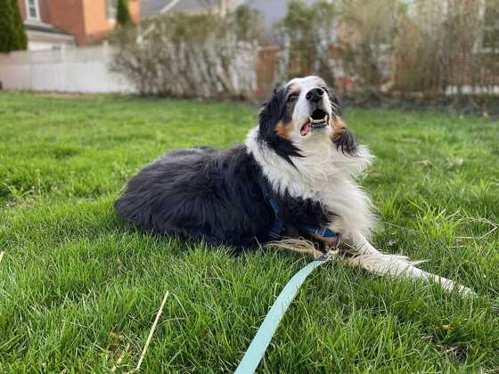
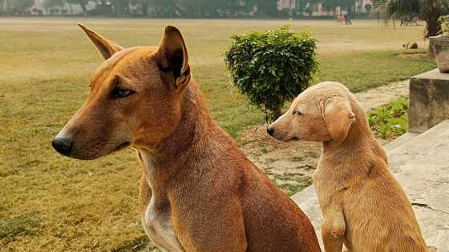
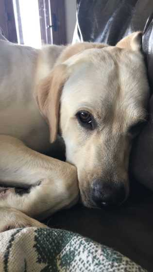
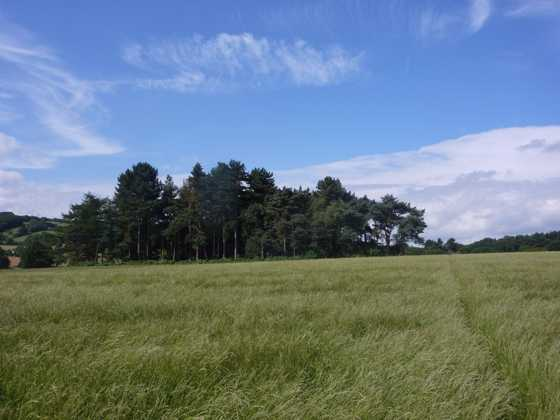

熊本県八代市 ・ 犬のトリミングサロン
わんちゃんも飼い主さんも、
ほっとなごむ時間を。
「犬の美容室 和(なごみ)」は、八代市でわんちゃんのシャンプーとカットを行うサロンです。
お店のこと
「和」の一文字に、やわらかな時間を。
掲載情報によると、「犬の美容室 和」は熊本県八代市で犬のシャンプーとカットを行うサロンで、八代市内で唯一、ターレス製のマイクロバブル設備を設置していると紹介されています。「安心なまちやつしろプロジェクト」の登録店としても掲載されています。
情報源: 安心なまちやつしろプロジェクト掲載ページ / Instagram
店名の「和」には「なごみ」という読みがあてられています。店名の意味や由来は、公開情報では確認できませんでした。以下は制作側のイメージです。「和」の字から、おだやかでほっとする空気を思い描き、このページの色づかいと言葉を整えました。
確認できた事実以外は制作側のイメージです。




口コミ
こんな声が聞かれそうです。
以下は制作側が作成した「イメージ例」で、実在の声ではありません。
イメージ例
仕上がったあとの毛並みがふわふわで、家でも何度もなでてしまいました。
イメージ例
落ち着いた雰囲気で、はじめてでも安心して預けられそうでした。
イメージ例
相談にていねいに応えてもらえて、帰り道の足取りも軽かったです。




アクセス
ご案内
| 所在地 | 日本、〒866-0043 熊本県八代市古城町1805-1 |
|---|---|
| 電話 | 準備中 |
| 営業時間 | 準備中 |
| 定休日 | 準備中 |
| SNS | Instagram @nagom_1 |
最新の営業情報はInstagramをご確認ください。

写真クレジット
写真について
掲載写真はフリー素材のイメージで、撮影地が日本以外のもの・不明なものを含みます。
- 写真01: Kevin Poh / CC BY 2.0 / Wikimedia Commons
- 写真02: ArtHistoryIsDank / CC BY-SA 4.0 / Wikimedia Commons
- 写真03: Rhododendrites / CC BY-SA 4.0 / Wikimedia Commons
- 写真04: ZooFari / CC BY-SA 3.0 / Wikimedia Commons
- 写真05: U.S. Army photo by Sgt. 1st Class Tanisha Karn / パブリックドメイン / Wikimedia Commons
- 写真06: Shixart1985 / CC BY 2.0 / Wikimedia Commons
- 写真07: Free-Photos / CC0 / Wikimedia Commons
- 写真08: KarærinGodess / CC BY-SA 4.0 / Wikimedia Commons
- 写真09: Perryprog / CC BY-SA 4.0 / Wikimedia Commons
- 写真10: Dietmar Rabich / CC BY-SA 4.0 / Wikimedia Commons
- 写真11: Benyamin Farnam / CC BY-SA 4.0 / Wikimedia Commons
- 写真12: Carlquist, Sherwin John (DPLA) / CC BY 4.0 / Wikimedia Commons
- 写真13: Andrew Hill / CC BY-SA 2.0 / Wikimedia Commons
- 写真14: Sanskritidubey / CC BY 4.0 / Wikimedia Commons